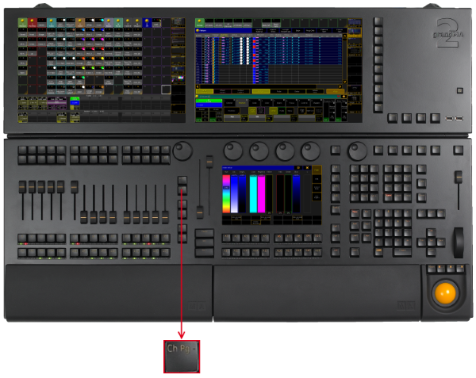
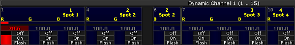

The key Ch Pg - is located on the left of the 100 mm fader.

Location key Ch Pg -
Pressing Ch Pg - executes the ChannelPage command.
The channel pages are displayed on screen 3 and 4. Channel Page
By pressing Ch Pg - again, you will jump to a previous channel page.
If the option Link Faders in the fixture sheet is active, the Ch Pg - key jumps to the dynamic channel pages on screen 3 and 4. 
Dynamic Channel Page
If you press and hold the Ch Pg -, you will automatically jump to the first channel page or the first dynamic channel page.